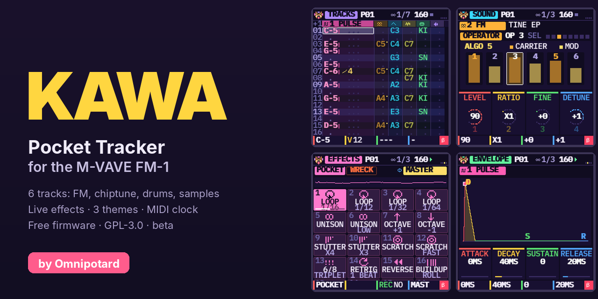

Samples
Convert your own sounds (WAV, MP3, OGG, FLAC) and send up to four of them to KAWA's MY 1 to MY 4 slots over USB, from Chrome or Edge. Nothing is uploaded.

Made for chiptune and IDM: breakbeat slicing, rolls, stutter, glitch effects, FM and 4-bit waves, 6 tracks
A free tracker firmware for the M-VAVE FM-1. Write patterns on six tracks (FM, chiptune, drums, breaks, samples), chain them into a song, and play live effects. Beta, GPL-3.0.
Not yet tried on a real FM-1. This is an unofficial firmware: install it at your own risk. The official firmware can be put back with M-UPGRADE (see below).
Loading…
Writing: do not unplug the FM-1, do not close or reload this page. Keep this tab in front and the computer awake until it says Done.
The whole package is checked before anything is erased: a damaged package, or one for another model, is refused and the old firmware stays. The chip's bootloader is never written. If the cable is cut during the write, plug the FM-1 back in and click again: the install resumes.
The installer needs Web MIDI with SysEx: Chrome, Edge or Opera on a computer. Firefox and Safari do not have it.
Another browser, or no luck? Use the INSTALL-Windows.bat, INSTALL-Mac.command or INSTALL-Linux.sh
launcher of the repository (they need Python 3).
Not for you? Put M-VAVE's firmware back with M-VAVE's own M-UPGRADE tool. Your KAWA projects will be lost. Read the steps first: README, Back to the official firmware. This page does not install the official firmware.
Convert your own sounds (WAV, MP3, OGG, FLAC) and send up to four of them to KAWA's MY 1 to MY 4 slots over USB, from Chrome or Edge. Nothing is uploaded.
Illustrated tutorials: a new song, a pattern, the chain, saving.
Try KAWA in your browser, no FM-1 needed.
The firmware, the tools and the tests. Free software, GPL-3.0.
Install by hand, build it, safety, credits.